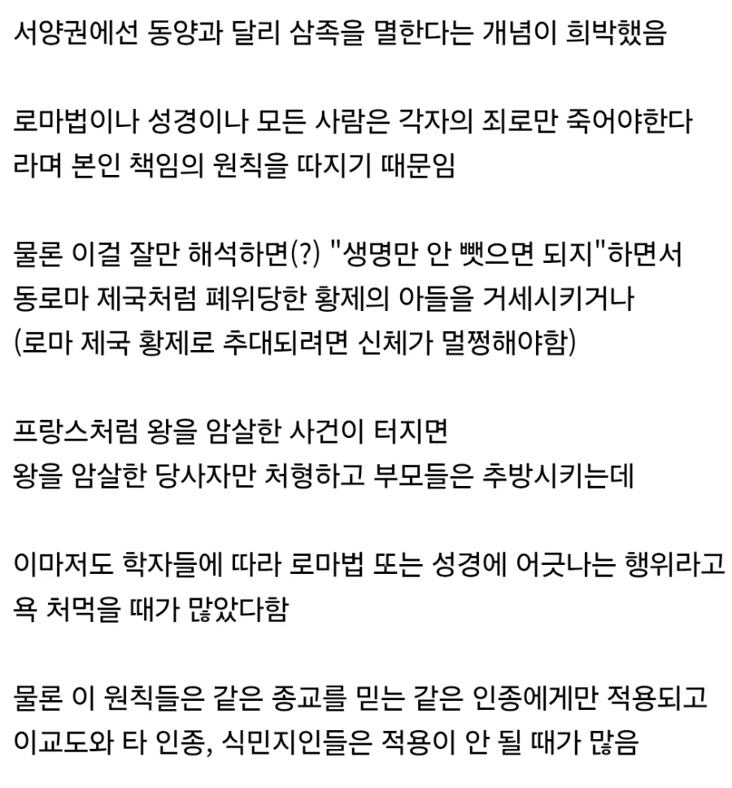
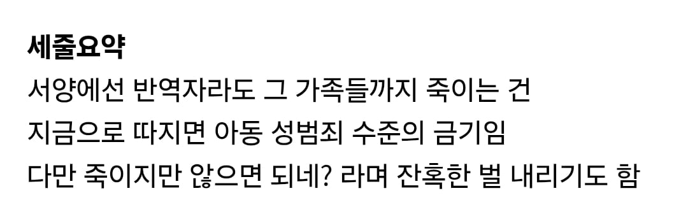

원래는 코만 잘랐는데 한분이 아득바득 권토중래 끝에 재기해서 복귀한 이후로는 재기못하게 눈을 파주는 방향으로 발?전한
암튼 안 죽였쥬?
소설에서 나오는 정복후 일가를 몴살하는건 진짜 소설이었던건가?
삼족이면 아버지 할아버지 증조부 아들 손주 증손주 삼촌들까지 싹다 아웃이라 범위 존나크긴함ㅋㅋㅋ
개처열받으면 구족을 멸하는데 이땐 마을하나는 날리는개념ㅋㅋㅋ
조선에서는 3족멸한다고 하면 일단 여자는 빼주고 너무 어리거나 늙어도 빼주고 어지간한 사정 있으면 다 빼줘서 끽해봐야 4~7명 죽이는거임. 중국은 모르겠다
거긴 그냥 이웃집인데 관리못한 너네 책임 해갖고 '오가작통법'이라고 있는데, 5가구 한묶음해서 한집이 죄지으면 나머지 4가구까지 몰살임 그걸 북한이 이어받아서 지금도 '5호담당제'로 쓰고 있음
첫줄 읽자마자 북한생각났는데 역시나 뒤에있네 ㅋㅋㅋ
그래서 조선 후기 되면 착취에 버티다 못해 도망가면 그 부담이 다른 마을 사람까지 짊어지게 되서 한명이 도망치니 순차적으로 전체마을이 도망쳐 마을 하나가 통채로 사라진 일도 있었음
다만 나머지4가구가 장형이라든가 세금 더 낸다든가 그런것은 있었는데 몰살은 전혀 없었음.
중국은 호방하게 구족을 멸해버렸음. 인구가 남아돌아서 근가 이새끼들은 스케일도 남달랐음. (명나라 영락제는 여기서 한 술 더 떠서 10족을 멸해버림)
유럽 어떤 나라인지 기억 안나지만 삼족이 아니라 그냥 그지역 사람들 다 죽인다던데
그건 독일 30년전쟁 이야기하는것 같은데 그 전쟁은 유난히 잔인한 전쟁이기도 했지만 종교가 섞여있었고(그 당시 이단은 같은 인간으로 보지 않았음) 감히 보호비나 징발(기열싸제언어로는 약탈이라고도 한다)에 응하지 않은 마을에 본보기로 보여주는 용도로 씀.
대표적인 예시로 30년전쟁 당시 마그데부르크 대약탈이 있는데 여기선 개신교측 도시가 항복을 거절하고 끝까지 싸우자 신성로마제국 황제의 용병대들이 그곳을 초토화 시켜서 2만의 도시인구가 학살당함.
과거 동아시아에서 역적을 모의했다가 삼족이 멸해지거나 구족이 멸해지는 연좌제에 처해지는 경우가 있었음. 삼족(三族)은 본인과 아버지, 자식을 중심으로 삼촌, 사촌, 조카까지 가족을 모두 죽이는 것이며, 구족(九族)은 증조할아버지부터 시작해서 할아버지, 아버지, 본인, 아들, 손자, 증손, 현손까지의 직계친을 중심으로 하여 방계친으로 고조의 4대손 되는 동종의 친족 전체를 말하기 때문에 단위가 수백에서 천까지 감. 명나라 정난의 변 때 방호유는 영락제에 의해 방호유의 일가친척뿐만 아니라 친구와 제자, 가까운 사람들을 합쳐 십족을 만들어 멸했음.
사실 삼족을 멸하거나 구족을 멸하는 것의 가장 큰 목적은 대중을 향한 경고였음. 즉, '너 한 몸 건사 잘못하면 니 일가친척에게 피해가 갈 수 있으니 알아서 잘 처신해라.' 라는 뜻임. 또한 이렇게 한 집안을 멸족시키는 이유는 후환을 남겨두었다가 그 후손이 복수하는 경우가 많았기 때문임. 최초로 삼족을 멸한 것은 전국시대 법가 사상가이자 정치가인 상앙의 십오제때부터라고 하는데, 그 이후에도 왕에게 죽임을 당한 사람의 아들이 아버지의 원수를 갚은 경우가 꽤 많았기 때문임. 특히 동아시아 문화권에서는 부모에 대한 원수는 반드시 보복하는 것이 미덕이었던 점도 한몫 했음. 결국 나무를 없애려면 뿌리를 뽑는 것이 후환을 없애는 가장 확실한 방법이라고 생각했던 것이라고 함.
황제거세 ㅗㅜㅑ
성별바뀌면 히토미같은데
걍 지들끼리 박다보니까 먼친척이라 그런거 아녀??
가문끼리 다 얽혀 있는 점도 멸족이 아닌 기반을 없애고 추방하는 정도 선으로 끝낸 이유로 알고 있음.
뭔 개소리임
상속 원칙 때문이지
재산이 상속될 수 있다면 죄도 상속되어야함
본인책임은 뭔 족발콧수염트짹이 쳐자다가 망상하고 자빠졌네
당시 쌀먹하던 동양에 비해서 인구수가 적어서도 있지 않을까
동양에서도 쌀은 사치품이라 주식이 아니엇는디.
중국도 화북은 밀이 주식이엿고 조선도 근대쯤 되서나 쌀이 주식이 됨.
그 전에는 일반 백성들은 오곡이 주식이엿음.
쌀때문에 인구가 많다는 소리는 대체 누가 퍼뜨린건지.
오곡이나 잡곡이 백성들의 주식이 맞은건 사실인데 그것도 지역과 시기 나라에 따라 다 달랐음.
그리고 쌀은 인구부양력이 압도적인것은 맞고 이것때문에 동양의 인구가 서양에 비해 많은것도 맞음.
그리고 너가 말했다싶이 화북은 쌀이 주식이 아닌데 근데 송나라 이후 화북이 아니라 강남이 중국의 인구와 경제의 중심지였음. 그리고 강남이 중심지가 된 큰 이유가 개발 이후 이곳의 대규모의 쌀재배와 주식이 된것이 매우 큼.
송나라~명나라 청나라때에 이르면 강남 및 남부 지역 인구가 전체의 60~70% 이상을 차지할 정도로 화북과 넘사벽의 차이를 보여줌
중국의 강남 사람들은 쌀은 사치품이 아니라 그냥 매일 먹는 주식이었음.
근거가 왜케 빈약하노 ㅋㅋㅋ 프랑스 로마법만 말하고 끝나버리네 ㅋㅋㅋㅋㅋㅋㅋㅋ 똥글 믿고 진짜라 생각하는 호구없지? 로마법 막 갖다부치네 ㅋㅋ
어으 악다구니 쓰는 댓글들 수준
신라 보면 김헌창이 반란일으켜서 신라 존나 위험한상태까지 끌고갔는데도 그 아버지인 김주원은 내비둔거 보면 유교 영향이 쎄지면 그렇게 되는건가 싶음.
3족을멸하면 몇개의 왕조가 통째로날라가.
동로마는 전황제 눈깔 파내고 그랬잖아..